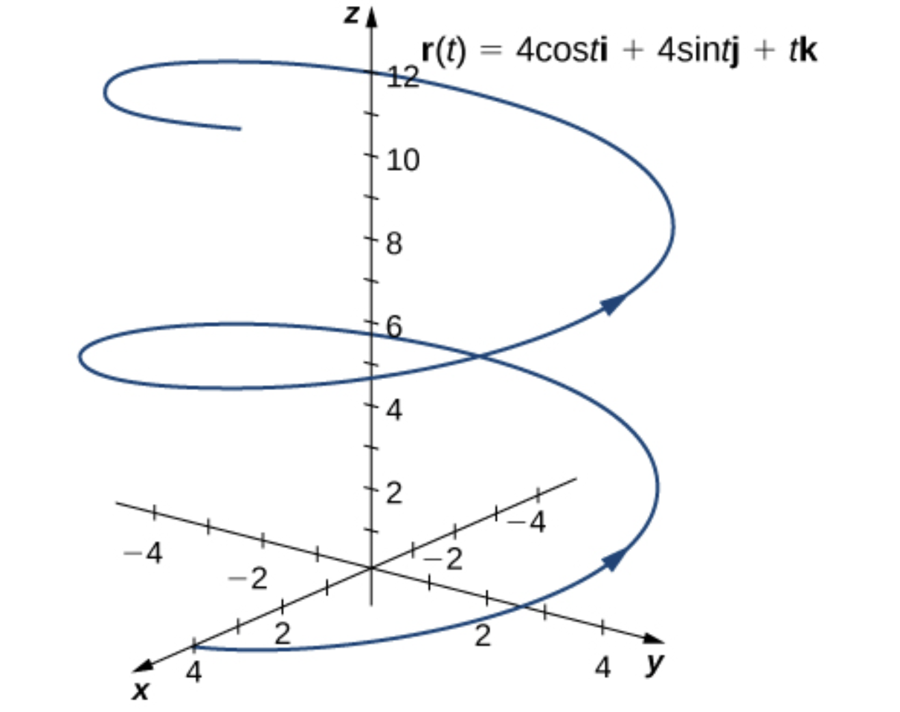

Section7.2Calculus of Vector-Valued Functions of a Single Variable
SubsectionBasic definitions
In this section, we discuss vector-valued functions of a single-variable, i.e. vector-valued functions taking elements of \(\R\) as input, and giving elements of \(\R^n\) as output (recall Definition 7.1.1). It is more simple to discuss the calculus associated with such functions, because any such function can be studied in terms of it’s \(n\) component functions, and these functions are scalar functions of a single variable studied in single variable calculus.
This class of functions often provide parameterizations of curves in space.
We already encountered parameterizations of curves when discussing parametric equations for straight lines, as in Definition 1.2.4. A line in space passing through a point \(\mathbf{x}_0 \in \R^n\) with direction vector \(\mathbf{d} \in \R^n\) is parameterized by the vector-valued function \(\mathbf{r}(t) = \mathbf{x}_0 + t \mathbf{d}\text{.}\)
Activity7.2.1.
The line \(L_1\) passes through point \((3,-2,5)\) and is parallel to the vector \(\mathbf{v} = ( 2,-3,4 )\text{.}\)
(a)
Find a parameterization of the line \(L_1\text{.}\)
Solution.
The line passes through \((3,-2,5)\) and has direction vector \((2,-3,4)\text{,}\) and so it parameterized by the function
Another line \(L_2\) passes through the point \((1,3,-1)\) and is perpendicular to \(L_1\text{.}\) If \(L_2\) also lies in the plane \(z = -1\text{,}\) find a parameterization of \(L_2\text{.}\)
Solution.
Since \(L_2\) lies in the plane \(z = -1\text{,}\) the \(z\)-coordinates of all the points of \(L_2\) are the same, so any direction vector for \(L_2\) must be of the form \(\mathbf{d} = (a,b,0)\) for some scalars \(a\) and \(b\text{.}\) Since \(L_2\) is perpendicular to \(L_1\text{,}\) direction vectors for \(L_2\) must be perpendicular to direction vectors of \(L_1\text{,}\) and since \(L_1\) has \((2,-3,4)\) as a direction vector, we find that
Any vector solving this equation gives a direction vector of \(L_2\text{,}\) and so (to obtain integer values of \(a\) and \(b\)) we can pick \(b = 2\text{,}\) and thus \(a = 3\text{.}\) So \(\mathbf{d} = (3,2,0)\) is a direction vector of \(L_2\text{,}\) and since \(L_2\) passes through \((1,3,-1)\text{,}\) we obtain a parameterization of \(L_2\) of the form
The parameterizations of straight lines given above are given by vector-valued functions whose components are linear functions. But we can also parameterize curves using nonlinear functions.
Example7.2.1.
As we vary \(t\) over its allowed values, the vector-valued function \(\mathbf{r}(t)\) traces a curve in \(\R^n\text{.}\) We will not graph functions by hand in this course. For example, consider
\begin{equation*}
\mathbf{r}(t) = 4 \cos t \mathbf{i} + 4 \sin t \mathbf{j} + t \mathbf{k}, \quad 0 \leq t \leq 4\pi\text{.}
\end{equation*}
Then the curve it traces is illustrated below.

Figure7.2.2.The helix traced by the vector-valued function \(\mathbf{r}\text{.}\) From Calculus Volume 3 by Strang and Herman
Activity7.2.2.
Recall the vectors \(\mathbf{i}\) and \(\mathbf{j}\) in \(\R^2\) from Definition 2.2.9. Consider the vector-valued function \(\mathbf{r}: \R \to \R^3\) defined by the equation
Though it is common in multivariate-calculus classes, in this class we will not spend much time focusing on techniques for sketching curves given a particular parameterization \(\mathbf{r}: \R \to \R^3\text{.}\)
SubsectionLimits and Continuity of Vector-Valued Functions
Definition7.2.4.Limit of a vector-valued function.
A vector-valued function \(\mathbf{r} : \mathbb{R} \to \mathbb{R}^n\) approaches the limit \(\mathbf{v} \in \mathbb{R}^n\) as \(t\) approaches \(a\text{,}\) written
That is, a vector-valued function is continuous at point \(t = a\) when the limit of the function as \(t\) approaches \(a\) equals the value of the function at \(a\text{.}\)
Theorem7.2.7.
A vector-valued function \(\mathbf{r}: \R \to \R^n\) with component functions \(r_1, \dots, r_n\) is continuous at \(t = a\) if and only if each of the component functions \(r_1,\dots,r_n\) is continuous at \(t = a\text{.}\)
SubsectionDerivatives of Vector-Valued Functions
Now we define the derivative of a vector-valued function from \(\R\) to \(\R^n\text{.}\) This definition closely resembles the definition of the derivative of a scalar-valued function from \(\R\) to \(\R\) in the calculus of a single variable.
Definition7.2.8.Derivative of a vector-valued function.
The derivative of a function \(\mathbf{r}: \R \to \R^n\) is
provided the limit exists. If \(\mathbf{r}'(t)\) exists, then we say \(\mathbf{r}\) is differentiable at \(t\text{.}\) If \(\mathbf{r}'(t)\) exists for all \(t\) in an open interval \((a,b)\text{,}\) then we say \(\mathbf{r}\) is differentiable on \((a,b)\text{.}\) The vector \(\mathbf{r}'(t)\) is called the tangent vector of the curve describd by the function \(\mathbf{r}\) at the point \(\mathbf{r}(t)\text{.}\)
Remark7.2.9.
The derivative \(\mathbf{r}': \R \to \R^n\) of a differentiable function \(\mathbf{r}: \R \to \R^n\) is also a vector-valued function.
As in single variable calculus, we will often have much more efficient methods of calculating the derivative of a function \(\mathbf{r}\text{.}\) But you should be able to work directly from the definition in simple examples.
Activity7.2.4.
Use the definition to calculate the derivative of the function
and it suffices to calculuate the limits as \(\Delta t \to 0\) for each component. For \(\Delta t \neq 0\text{,}\) expanding and canceling out like factors gives that
Since Theorem 7.2.5 tells us taking limits of functions from \(\R\) to \(\R^n\) is equivalent to taking the limits of each component function, taking the derivative of such a function is equivalent to taking the derivative of each component function.
Theorem7.2.10.
If \(\mathbf{r}: \R \to \R^n\) has components \(r_1,\dots,r_n: \R \to \R\text{,}\) then \(\mathbf{r}\) is differentiable at \(t\) if and only if each component function \(r_1,\dots,r_n\) is differentiable at \(t\text{,}\) and
If \(\mathbf{r}: \R \to \R^n\text{,}\) then \(\mathbf{r}': \R \to \R^n\) is also a vector-valued function of the same type, so we can consider the second derivatives \(\mathbf{r}''\text{,}\) i.e. the derivative of the function \(\mathbf{r}'\text{.}\)
Activity7.2.6.
Find \(\mathbf{r}''(t)\text{,}\) where \(\mathbf{r}\) is as in Activity 7.2.5.
\begin{equation*}
\mathbf{u}' \cdot \mathbf{v} = (-\sin t, \cos t, 1) \cdot (t, \ln t, 1) = - t \sin t + \ln t \cos t + 1\text{.}
\end{equation*}
So
\begin{align*}
(\mathbf{u} \cdot \mathbf{v})' \amp = \mathbf{u} \mathbf{v}' + \mathbf{u}' \mathbf{v}\\
\amp = \left( \cos t + \frac{\sin t}{t} \right) + \left( - t \sin t + \ln t \cos t + 1 \right).\\
\amp = \cos t(1 + \ln t) + \sin t\left( 1/t - t\right) + 1\text{.}
\end{align*}
Remark7.2.12.
Note that in Activity 7.2.7, since \(\mathbf{v}\) is only well-defined for \(t > 0\text{,}\) the function \(\mathbf{u} \cdot \mathbf{v}\) is also only well-defined for \(t > 0\text{,}\) as is it’s derivative.